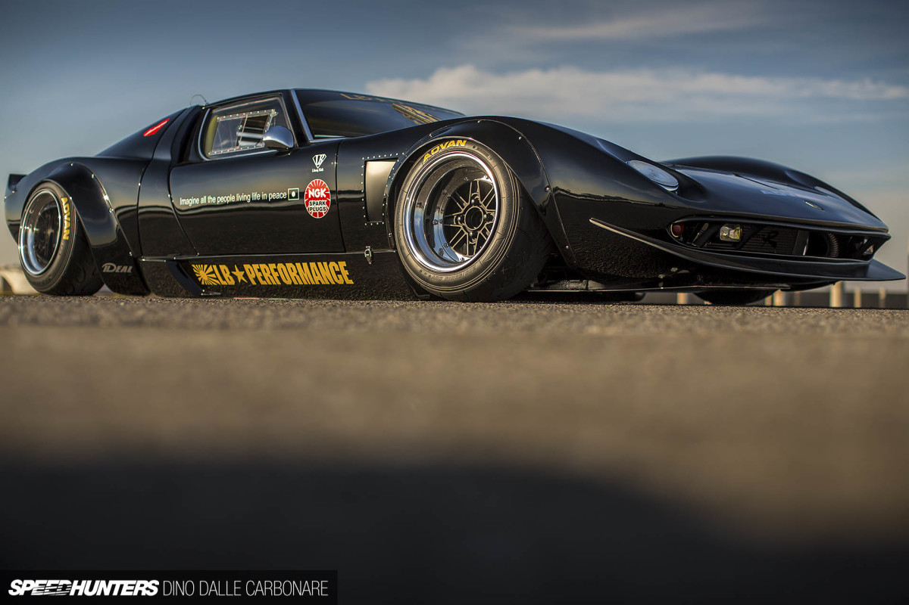
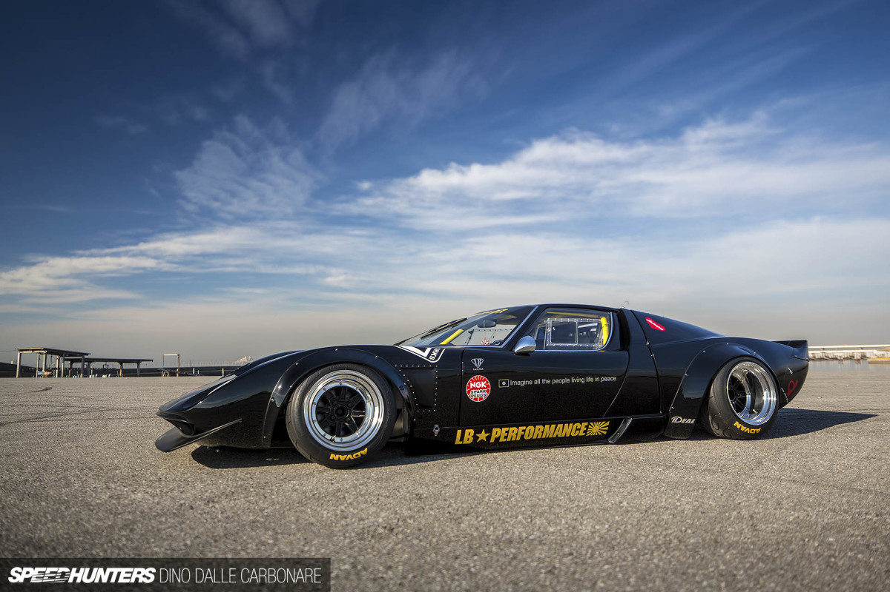

A Miura The World Loves To Hate
I have to give it to Kato-san of Liberty Walk – he’s a master of surprise, something that is no small feat in the aftermarket tuning world.
I wouldn’t want to be him that’s for sure. I mean, every time the Tokyo Auto Salon or SEMA Show rolls around he’s expected to shock and wow people the world over, just so those same people can then complain about it online. It’s a bit of a vicious circle, but one that the man himself loves to be a part of. He’s turned automotive controversy into an art form and doesn’t care about the noise, the negativity, or the butt-hurt purists. He just wants to have fun with cars and continue building his overfendered empire.
But no one could have possibly foreseen what he had in store for us at TAS this year.

When I visited Liberty Walk HQ in Nagoya a month or so before SEMA last year to shoot Kato’s first new-gen Honda NSX creation, I was shown a low-slung GTD (GT Developments) Ford GT40 replica. ‘That’s going to be re-skinned with custom-made Miura cowls, cut up, fitted with overfenders and debuted at TAS,’ I was told.

I politely nodded with an understanding look on my face, but inside I couldn’t even picture what something like that would even look like. Well, Kato pulled it off and the result is something that has generated a lot of controversy. But before I go any further, again, this is a replica – it’s not a real Lamborghini Miura.

Not that it would stop Kato mind you, it’s just that a real deal Miura costs a pretty penny these days and there is a limit to everything. But the next best thing still turns heads, and so much so that Liberty Walk has already been approached by a few interested parties who want to make this wild one-off creation their own.
A couple of days after the Tokyo Auto Salon, I met up with Kawamura-san of LBW at a little fishing port in Chiba that I like to use for shoots when time isn’t a constraint. The car was mine for a whole day.
Seeing it in the open, the first thing that blew me away was just how damn low it is. I’m not talking about the ride height here, which of course has been dropped courtesy of air bags, but its physical height. The GT40 got its name from being 40.5-inches tall at its roofline, but the LB Miura manages to slash that with a 32.2-inch height. It almost looks like it’s been squashed.
To make the whole car work, the base GTD chassis was modified so it could accept the Miura re-skin, which was applied in three main sections: the roof and center cockpit along with the doors, with the front and rear cowls following.
It was a feat and a half to make it work, but the end result certainly is something else. You know it’s a replica of one of the greatest designs ever penned, but that it’s a bit of fun also.
You either love it and get the point of it, or you feel offended and look away. Whichever camp you side with is your choice, but you can’t help but grin at the craziness of it all. A shakotan Miura for God’s sake; how cool is that?!
For how beautiful the Miura was, it came out of an era where wheel fitment was weak to say the least. Having wheels tucked deep within the guards was just how things were done in the ’60s, but if you ever wondered how the Miura’s stunning profile would look like if Marcello Gandini was called upon to convert his design into a race car, well, maybe this is one route he could have gone down.
Essentially, this is what Kato-san has done, attacking the fenders of the FRP replica cowls with an air saw and then grafting on flares to increase the overall width.
Up front, a lip spoiler has been added, its design inspired from what the Miura Jota SVR used. Thankfully, there is no wing on the roof, but rather a ducktail extending the rear end upwards into a bit of a spoiler.
The overfenders aren’t too exaggerated; they’re almost conservative, if that’s even a word I can get away with using here. The rolling stock is pure JDM with the 15×10-inch SSR MKIII front wheels having been tightly wrapped in 205-section Yokohama Advan A050 semi-slicks. To get the fitment just right, 60mm spacers were added to add to the wheels’ -20 offset.
For a vintage feel, vents were cut into the fenders after the front wheels and then lined with rivets.
The 15×12-inch -60 rear wheels exhibit a bit more dish, but to get them to line up with the flares 90mm spacers were added on each side. Even though the rubber is a tad wider at 225, there’s still quite a lot of stretch going on.
Looks are very important, but I wanted to get a feel for what this replica looked like underneath. To swing open the rear cowl it’s a simple process of pulling out the two pins on the roof…
… And the not-so-simple task of sliding the tail pipes off the custom Wolf exhaust system. These tips protrude through the rear grille opening, so will catch on the cowl as it swings back outward if not removed.
With the cowl out the way, the ’60s-era Ford Motorsport 302ci V8 this GTD replica came with is revealed. It sits beautifully center stage, hand-curved and welded Wolf headers meeting in the middle and arching outwards through the rear. This is, of course, a Kato-car, so silencers were not required in the exhaust system. Yes, it’s loud.
Sitting atop the V8 are a quartet of down-draft Weber carburetors, all plumbed in a period correct way without a single modern fitting or braided line in sight.
The throttle linkage that operates the eight butterfly valves is beautifully mechanical, and the sort of thing you really want to see in the engine bay of a car like this.
I really couldn’t get enough of these headers. Absolute exhaust porn.
Sitting perched up on top of the transaxle is possibly the last thing you’d expect to find in a Miura – replica or otherwise. But the Ideal air ride system is what allows the car to be slammed on its belly at the flick of a switch.
Some slight modifications were needed to both the front and rear lower arms to ensure the correct amount of camber would be reached when the system is fully aired out.
When I visited Liberty Walk HQ in Nagoya a month or so before SEMA last year to shoot Kato’s first new-gen Honda NSX creation, I was shown a low-slung GTD (GT Developments) Ford GT40 replica. ‘That’s going to be re-skinned with custom-made Miura cowls, cut up, fitted with overfenders and debuted at TAS,’ I was told.
I politely nodded with an understanding look on my face, but inside I couldn’t even picture what something like that would even look like. Well, Kato pulled it off and the result is something that has generated a lot of controversy. But before I go any further, again, this is a replica – it’s not a real Lamborghini Miura.